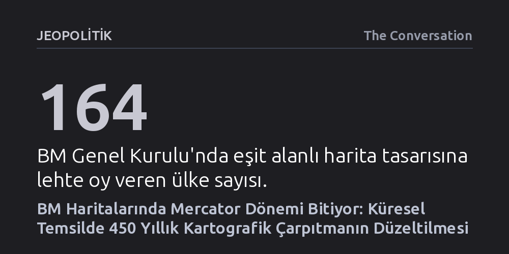

JEOPOLITIK · The Conversation · 2026-09-09
Birleşmiş Milletler Genel Kurulu, 450 yıldır Kuzey Yarımküre'yi orantısız büyüterek sömürgeci algıyı pekiştiren Mercator projeksiyonu yerine kıtaların gerçek yüzölçümlerini yansıtan eşit alanlı haritalara geçme kararı aldı. Karar, haritaların yalnızca coğrafi birer çizim değil, siyasi güç araçları olduğunu tescilliyor.
Haritaların nesnel ve tarafsız coğrafi gerçekler olmadığını, aksine dünyayı algılama ve yönetme biçimimizi şekillendiren siyasi tercihler barındırdığını gösteriyor.

Birleşmiş Milletler Genel Kurulu, resmi haritalarında köklü bir değişikliğe giderek dünya algısını yüzyıllardır şekillendiren kartografik dengesizliği giderecek tarihi bir karara imza attı. Afrika Birliği adına Togo'nun öncülüğünde sunulan tasarı, 164 lehte oya karşılık yalnızca 1 aleyhte oyla kabul edildi; karara ret oyu veren tek ülke Amerika Birleşik Devletleri olurken altı ülke çekimser kaldı. Bu oylamayla birlikte Birleşmiş Milletler, dünya haritalarında 450 yılı aşkın süredir süregelen Mercator kaynaklı görsel adaletsizliği resmen tanımış oldu.
Kararın yürürlüğe girmesiyle birlikte Kanada, Grönland ve Rusya gibi kuzey bölgeleri BM'nin resmi haritalarında artık belirgin şekilde daha küçük görünecek. Buna karşılık, yüzyıllardır haritalarda olduğundan küçük resmedilen Afrika, Güney Amerika ve Güney Asya kıtaları gerçek yüzölçümlerine uygun büyüklükleriyle temsil edilecek. Togo temsilcisinin ifadesiyle bu adım, "uluslar arasında daha fazla anlayış, saygı ve barışın yolunu açmayı" ve geçmişten devralınan sömürgeci mirası telafi etmeyi amaçlıyor.
Flaman haritacı Gerardus Mercator, 1569 yılında Dünya'nın yuvarlak yüzeyini iki boyutlu düzleme aktarabilmek için yenilikçi bir yöntem geliştirdi. Bu projeksiyonun en kritik başarısı, kerte hatlarını yani pusulada sabit bir yönü gösteren seyir çizgilerini düz hatlar olarak çizebilmesiydi. Coğrafi keşiflerin ve sömürgecilik yarışının hız kazandığı bu dönemde Avrupalı denizciler için pusula açısını bozmadan rotayı koruyabilmek hayati bir kolaylık sağladı.
Ne var ki seyrüsefer için kusursuz olan bu yöntem, kara parçalarının yüzölçümünü muhafaza etmek konusunda ciddi bir kusur barındırıyordu. Mercator projeksiyonu, ekvatordan kutuplara doğru gidildikçe alanları geometrik olarak aşırı biçimde büyütüyordu. Başlangıçta yalnızca denizcilik haritaları için tasarlanan bu teknik model zaman içinde okullardan atlaslara kadar her alanda standart dünya haritasına dönüştü; neticede Kuzey Amerika, Avrupa ve Rusya, Afrika ve Güney Amerika'dan çok daha heybetli görünmeye başladı.
Mercator projeksiyonunun yarattığı teknik bozulma haritacılar tarafından uzun süredir bilinmekteydi; ancak bu yanılsamanın sömürgeci ideolojilerle olan bağı 1970'lere kadar geniş kitlelerin dikkatini çekmedi. Alman tarihçi Arno Peters, 1973 yılında kıtaların gerçek yüzölçümlerini koruyan yeni bir eşit alanlı projeksiyon sunarak Mercator'un yaydığı algıya açıkça meydan okudu: Avrupa haritalarda göründüğü kadar devasa değildi, eski sömürgeleri ise sanılandan çok daha genişti.
Esasen İskoç din adamı James Gall'in 1855'teki çalışmasına çok benzeyen bu tasarım, kartografya camiasında "harita savaşları" olarak adlandırılan yoğun bir tartışma başlattı. Peters haritası görsel olarak kıtaları dikeyde uzatıp deforme ettiği gerekçesiyle teknik açıdan eleştirilse de Oxfam ve UNESCO gibi uluslararası kuruluşlar tarafından hızla benimsendi. Bugün BM'nin benimsediği "Equal Earth" (Eşit Dünya) projeksiyonu ise, Peters'in yarattığı şekil bozukluklarını estetik biçimde düzelten ve kara parçalarının gerçek alan oranlarını koruyan modern bir uzlaşma sunuyor.
BM'nin benimsediği bu yeni yaklaşım okullarda ve uluslararası kurumlarda dünya vizyonunu tazeleyecek olsa da gündelik hayatta en sık karşılaştığımız dijital harita platformlarındaki etkisi belirsizliğini koruyor. Günümüzde Google Maps gibi yaygın navigasyon uygulamaları, temelini yine 16. yüzyıl modelinden alan "Web Mercator" projeksiyonunu kullanmayı sürdürüyor. Dünyayı kare parçalara bölerek ekran üzerinde hızlı ve pürüzsüz yakınlaştırma sağlayan bu format, yerel ölçekte yüksek hassasiyet sunsa da küresel ölçekte kutuplara yakın ülkeleri orantısız büyütme yanılsamasını aynen devam ettiriyor.
Bu dijital platformlar sadece eski çarpık perspektifi sürdürmekle kalmıyor; aynı zamanda dünyayı karayolu ağları, işletme görünürlüğü ve tüketim öncelikleri üzerinden kurgulayan yeni bir bakış açısını zihinlerimize işliyor. Haritalar hiçbir dönemde masum, tarafsız ya da nesnel birer coğrafya aynası olmadı. Hangi bölgeleri büyüttükleri, hangi sınırları çizdikleri, hangi yer isimlerini kullandıkları ve hangi ticari noktaları öne çıkardıklarıyla haritalar, dünyayı anlama ve onunla etkileşime girme biçimimizi yönlendiren güçlü birer siyasi enstrümandır.